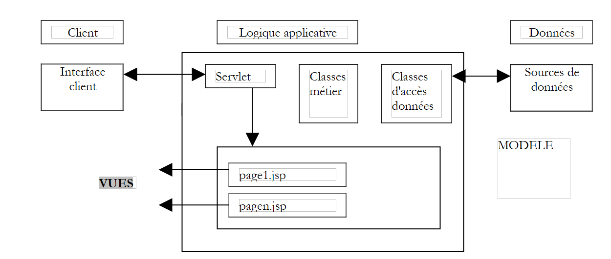
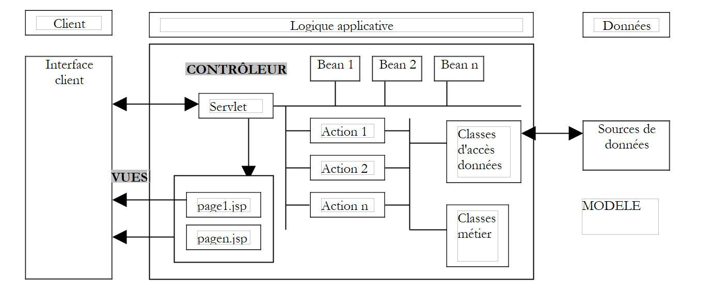
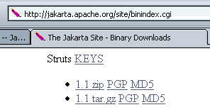
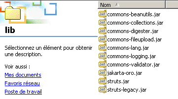

1. Allgemeine Informationen
Das PDF des Dokuments ist |HIER| verfügbar.
1.1. Ziele
In diesem Artikel werden wir uns mit einem Entwicklungsframework namens Struts befassen. Jakarta Struts ist ein Projekt der Apache Software Foundation (www.apache.org), das darauf abzielt, ein Standard-Framework für die Entwicklung von Java-Webanwendungen auf Basis der MVC-Architektur (Model-View-Controller) bereitzustellen.
1.2. Das MVC-Modell
Das MVC-Modell zielt darauf ab, die Präsentations-, Verarbeitungs- und Datenzugriffsebenen voneinander zu trennen. Eine Webanwendung, die diesem Modell folgt, ist wie folgt aufgebaut:
 |
Diese Architektur wird als 3-Tier- oder 3-Level-Architektur bezeichnet:
- Die Benutzeroberfläche ist das V (die Ansicht)
- die Anwendungslogik ist das C (der Controller)
- die Datenquellen sind das M (Model)
Die Benutzeroberfläche ist oft ein Webbrowser, es kann sich aber auch um eine eigenständige Anwendung handeln, die über das Netzwerk HTTP-Anfragen an den Webdienst sendet und die empfangenen Ergebnisse formatiert. Die Anwendungslogik besteht aus Skripten, die Benutzeranfragen verarbeiten. Die Datenquelle ist oft eine Datenbank, es können aber auch einfache Flatfiles, ein LDAP-Verzeichnis, ein Remote-Webdienst usw. sein. Es liegt im Interesse des Entwicklers, ein hohes Maß an Unabhängigkeit zwischen diesen drei Entitäten zu wahren, damit bei einer Änderung an einer der drei Entitäten die anderen beiden nicht oder nur minimal angepasst werden müssen.
Bei der Anwendung dieses Modells mit Servlets und JSP-Seiten ergibt sich folgende Architektur:
 |
Im Block [Anwendungslogik] unterscheiden wir
- zwischen dem Servlet, das den Einstiegspunkt der Anwendung bildet und auch als Controller bezeichnet wird,
- den Block [Business Classes], der die für die Anwendungslogik erforderlichen Java-Klassen enthält
- den Block [Datenzugriffsklassen], der die Java-Klassen enthält, die zum Abrufen der vom Servlet benötigten Daten erforderlich sind, häufig persistente Daten (Datenbank, Dateien, Webservice usw.)
- den Block „JSP-Seiten“, der die Ansichten der Anwendung bildet.
1.3. Ein MVC-Entwicklungsansatz unter Verwendung von Servlets und JSP-Seiten
Wir haben einen Ansatz zur Entwicklung von Java-Webanwendungen definiert, der dem oben beschriebenen MVC-Modell folgt. Wir werden ihn hier näher betrachten.
- Zunächst definieren wir alle Ansichten der Anwendung. Dabei handelt es sich um die Webseiten, die dem Benutzer angezeigt werden. Wir nehmen daher bei der Gestaltung der Ansichten die Perspektive des Benutzers ein. Es gibt drei Arten von Ansichten:
- das Eingabeformular, das dazu dient, Informationen vom Benutzer zu erfassen. Dieses Formular enthält in der Regel eine Schaltfläche, um die eingegebenen Informationen an den Server zu senden.
- die Antwortseite, die ausschließlich dazu dient, dem Benutzer Informationen bereitzustellen. Diese enthält oft einen Link, über den der Benutzer die Anwendung auf einer anderen Seite weiter nutzen kann.
- die gemischte Seite: Das Servlet hat dem Client eine Seite mit von ihm generierten Informationen gesendet. Dieselbe Seite wird vom Client verwendet, um dem Servlet zusätzliche Informationen zu übermitteln.
- Jede Ansicht generiert eine JSP-Seite. Für jede dieser Ansichten:
- entwerfen wir das Layout der Seite
- legen wir fest, welche Teile davon dynamisch sind:
- die für den Benutzer bestimmten Informationen, die vom Servlet als Parameter an die JSP-Ansicht übergeben werden müssen
- die Eingabedaten, die zur Verarbeitung an das Servlet übermittelt werden müssen. Diese Daten müssen Teil eines HTML-Formulars sein.
- Wir können die Ein- und Ausgabe für jede Ansicht schematisch darstellen
 |
- Eingaben sind die Daten, die das Servlet der JSP-Seite bereitstellen muss, entweder in der Anfrage oder in der Sitzung.
- Ausgaben sind die Daten, die die JSP-Seite dem Servlet bereitstellen muss. Sie sind Teil eines HTML-Formulars, und das Servlet ruft sie mithilfe einer Operation wie request.getParameter(...) ab.
- Wir werden den Java/JSP-Code für jede Ansicht schreiben. Meistens wird er folgende Form haben:
<%@ page ... %> // importations de classes le plus souvent
<%!
// variables d'instance de la page JSP (=globales)
// nécessaire que si la page JSP a des méthodes partageant des variables (rare)
...
%>
<%
// récupération des données envoyées par la servlet
// soit dans la requête (request) soit dans la session (session)
...
%>
<html>
...
// on cherchera ici à minimiser le code java
</html>
- Anschließend können wir mit den ersten Tests fortfahren. Die unten beschriebene Bereitstellungsmethode ist spezifisch für den Tomcat-Server:
- Der Anwendungskontext muss in der Datei server.xml von Tomcat angelegt werden. Wir können damit beginnen, diesen Kontext zu testen. Sei C dieser Kontext und DC der ihm zugeordnete Ordner. Wir erstellen eine statische Datei namens test.html und legen sie im Ordner DC ab. Nach dem Start von Tomcat rufen wir die URL http://localhost:8080/DC/test.html in einem Browser auf.
- Jede JSP-Seite kann getestet werden. Wenn eine JSP-Seite den Namen formulaire.jsp trägt, rufen wir die URL http://localhost:8080/DC/formulaire.jsp in einem Browser auf. Die JSP-Seite erwartet Werte von dem Servlet, das sie aufruft. Da wir sie hier direkt aufrufen, erhält sie die erwarteten Parameter nicht. Um sicherzustellen, dass das Testen dennoch möglich ist, initialisieren wir die erwarteten Parameter in der JSP-Seite manuell mithilfe von Konstanten. Diese ersten Tests überprüfen, ob die JSP-Seiten syntaktisch korrekt sind.
- Als Nächstes schreiben wir den Servlet-Code. Er verfügt über zwei unterschiedliche Methoden:
- die init-Methode, die dazu dient:
- die Konfigurationsparameter der Anwendung aus der Datei web.xml abzurufen
- gegebenenfalls Instanzen von Geschäftsklassen zu erstellen, die später benötigt werden
- die Behandlung einer Liste von Initialisierungsfehlern, die an zukünftige Nutzer der Anwendung zurückgegeben werden. Diese Fehlerbehandlung kann sogar das Senden einer E-Mail an den Anwendungsadministrator umfassen, um diesen über eine Fehlfunktion zu informieren
- die doGet- oder doPost-Methode, je nachdem, wie das Servlet Parameter von seinen Clients empfängt. Wenn das Servlet mehrere Formulare verarbeitet, empfiehlt es sich, dass jedes Formular Informationen sendet, die es eindeutig identifizieren. Dies kann mithilfe eines versteckten Attributs in der Form <input type="hidden" name="action" value="..."> erfolgen. Das Servlet kann zunächst den Wert dieses Parameters auslesen und dann die Verarbeitung der Anfrage an eine private interne Methode delegieren, die für die Bearbeitung dieser Art von Anfragen zuständig ist.
- Sie sollten es so weit wie möglich vermeiden, Geschäftslogik in das Servlet zu integrieren. Dafür ist es nicht ausgelegt. Das Servlet fungiert als eine Art Teamleiter (Controller), der Anfragen von seinen Clients (Web-Clients) entgegennimmt und diese von den am besten geeigneten Entitäten (den Geschäfts-Klassen) ausführen lässt. Beim Schreiben des Servlets definieren Sie die Schnittstelle der zu erstellenden Geschäfts-Klassen (Konstruktoren, Methoden). Dies gilt, wenn diese Geschäfts-Klassen erst erstellt werden müssen. Wenn sie bereits existieren, muss sich das Servlet an die vorhandene Schnittstelle anpassen.
- Der Servlet-Code wird kompiliert.
- Wir schreiben das Grundgerüst der vom Servlet benötigten Geschäftsklassen. Wenn das Servlet beispielsweise ein Objekt vom Typ proxyArticles verwendet und diese Klasse über eine getCodes-Methode verfügen muss, die eine Liste (ArrayList) von Zeichenfolgen zurückgibt, können wir zunächst einfach schreiben:
public ArrayList getCodes(){
String[] codes= {"code1","code2","code3"};
ArrayList aCodes=new ArrayList();
for(int i=0;i<codes.length;i++){
aCodes.add(codes[i]);
}
return aCodes;
}
- Wir können nun mit dem Testen des Servlets fortfahren.
- Die Konfigurationsdatei web.xml der Anwendung muss erstellt werden. Sie muss alle Informationen enthalten, die von der init-Methode des Servlets erwartet werden (<init-param>). Zusätzlich legen wir die URL fest, über die auf das Haupt-Servlet zugegriffen wird (<servlet-mapping>).
- Alle erforderlichen Klassen (Servlet, Business-Klassen) werden im Verzeichnis WEB-INF/classes abgelegt.
- Alle erforderlichen Klassenbibliotheken (.jar) werden im Verzeichnis WEB-INF/lib abgelegt. Diese Bibliotheken können Business-Klassen, JDBC-Treiber usw. enthalten.
- Die JSP-Ansichten werden im Anwendungsstammverzeichnis oder in einem eigenen Ordner abgelegt. Gleiches gilt für andere Ressourcen (HTML, Bilder, Audio, Videos usw.).
- Sobald dies erledigt ist, wird die Anwendung getestet und die anfänglichen Fehler werden behoben. Am Ende dieser Phase ist die Anwendungsarchitektur betriebsbereit. Diese Testphase kann schwierig sein, da mit Tomcat kein Debugging-Tool zur Verfügung steht. Dazu müsste Tomcat in ein Entwicklungstool (JBuilder Developer, Sun One Studio usw.) integriert werden. Sie können System.out.println("....")-Anweisungen verwenden, die in die Tomcat-Konsole schreiben. Als Erstes muss überprüft werden, ob die init-Methode alle Daten erfolgreich aus der Datei web.xml abruft. Dazu können wir die Werte dieser Parameter in das Tomcat-Fenster schreiben. Auf ähnliche Weise überprüfen wir, ob die doGet- und doPost-Methoden die Parameter korrekt aus den verschiedenen HTML-Formularen der Anwendung abrufen.
Wir schreiben die vom Servlet benötigten Business-Klassen. Dies umfasst im Allgemeinen die Standardentwicklung einer Java-Klasse, die in der Regel unabhängig von einer Webanwendung ist. Sie wird zunächst außerhalb dieser Umgebung getestet, beispielsweise mit einer Konsolenanwendung. Sobald eine Business-Klasse geschrieben wurde, können wir sie in die Bereitstellungsarchitektur der Webanwendung integrieren und ihre korrekte Integration darin testen. Dieser Vorgang wird für jede Business-Klasse wiederholt.
1.4. Der STRUTS-Entwicklungsansatz
Die Entwickler der STRUTS-Methodik wollten eine Standardentwicklungsmethode definieren, die der MVC-Architektur für in Java geschriebene Webanwendungen folgt. Das STRUTS-Projekt umfasst zwei Aspekte:
- die Entwicklungsmethode. Wir werden sehen, dass sie der oben für Servlets und JSP-Seiten beschriebenen sehr ähnlich ist
- die Werkzeuge, die es uns ermöglichen, diese Entwicklungsmethode anzuwenden. Dabei handelt es sich um Java-Klassenbibliotheken, die auf der Website der Apache Foundation (www.apache.org) verfügbar sind.
1.4.1. Die Entwicklungsmethode
Die von STRUTS verwendete MVC-Architektur sieht wie folgt aus:
 |
- Der Controller ist das Herzstück der Anwendung. Alle Client-Anfragen laufen über ihn. Es handelt sich um ein generisches Servlet, das von STRUTS bereitgestellt wird. In manchen Fällen kann es erforderlich sein, dieses zu erweitern. In einfachen Fällen ist dies jedoch nicht notwendig. Dieses generische Servlet bezieht die benötigten Informationen aus einer Datei, die meist struts-config.xml heißt.
- Enthält die Client-Anfrage Formularparameter, werden diese in einem Bean-Objekt abgelegt. Eine Klasse gilt als vom Typ Bean, wenn sie den Konstruktionsregeln folgt, die wir später besprechen werden. Die im Laufe der Zeit erstellten Bean-Objekte werden in der Sitzung oder Anfrage des Clients gespeichert. Diese Einstellung ist konfigurierbar. Sie müssen nicht neu erstellt werden, wenn sie bereits vorhanden sind.
- In der Konfigurationsdatei „struts-config.html“ wird jede vom Programm zu verarbeitende URL (die somit keiner JSP-Ansicht entspricht, die direkt angefordert werden könnte) mit bestimmten Informationen verknüpft:
- dem Namen der Klasse vom Typ „Action“, die für die Verarbeitung der Anfrage zuständig ist. Auch hier kann das instanziierte Action-Objekt in der Sitzung oder der Anfrage gespeichert werden.
- Wenn die angeforderte URL parametrisiert ist (wie beim Absenden eines Formulars an den Controller), wird der Name des Beans angegeben, das für die Speicherung der Formulardaten zuständig ist.
- Ausgestattet mit diesen Informationen aus der Konfigurationsdatei kann der Controller beim Empfang einer URL-Anfrage von einem Client feststellen, ob und welche Bean erstellt werden muss. Nach der Instanziierung kann die Bean überprüfen, ob die von ihr gespeicherten Daten – die aus dem Formular stammen – gültig sind oder nicht. Eine Methode der Bean namens `validate` wird automatisch vom Controller aufgerufen. Die Bean wird vom Entwickler erstellt. Der Entwickler platziert daher den Code, der die Gültigkeit der Formulardaten überprüft, innerhalb der validate-Methode. Wenn die Daten als ungültig befunden werden, fährt der Controller nicht fort. Er übergibt die Kontrolle an eine Ansicht, deren Namen er in seiner Konfigurationsdatei findet. Die Interaktion ist dann abgeschlossen. Beachten Sie, dass der Entwickler festlegen kann, die Gültigkeit des Formulars nicht prüfen zu lassen. Dies erfolgt ebenfalls in der Datei struts-config.html. In diesem Fall ruft der Controller die validate-Methode des Beans nicht auf.
- Sind die Daten des Beans korrekt, findet keine Validierung statt oder ist kein Bean vorhanden, übergibt der Controller die Kontrolle an das mit der URL verknüpfte Action-Objekt. Dies geschieht durch Aufruf der execute-Methode dieses Objekts, wobei ihm die Referenz auf das möglicherweise erstellte Bean übergeben wird. Hier führt der Entwickler die erforderlichen Schritte aus: Er muss möglicherweise Business-Klassen oder Datenzugriffsklassen aufrufen. Am Ende der Verarbeitung gibt das Action-Objekt dem Controller den Namen der Ansicht zurück, die er als Antwort an den Client senden muss.
- Der Controller sendet diese Antwort. Die Interaktion mit dem Client ist abgeschlossen.
Die STRUTS-Entwicklungsmethodik nimmt Gestalt an:
- Definition von Ansichten. Wir unterscheiden zwischen Ansichten, die Formulare sind, und anderen Ansichten.
- Jede Formularansicht generiert eine Definition in der Datei struts-config.xml. Dort werden folgende Informationen definiert:
- den Namen der Bean-Klasse, die die Formulardaten enthält, sowie die Angabe, ob die Daten validiert werden sollen oder nicht. Wenn eine Validierung erforderlich ist und die Daten als ungültig erkannt werden, muss in diesem Fall die Ansicht angegeben werden, die an den Client zurückgesendet werden soll.
- Der Name der Action-Klasse, die für die Verarbeitung des Formulars zuständig ist.
- die Namen aller Ansichten, die nach der Verarbeitung der Anfrage an den Client gesendet werden können. Die Action-Klasse wählt anhand des Verarbeitungsergebnisses eine davon aus.
- Jede Ansicht entspricht einer JSP-Seite. Wir werden sehen, dass wir in Ansichten – insbesondere in Formularansichten – manchmal eine Bibliothek mit Struts-spezifischen Tags verwenden.
- Jede Formularansicht generiert eine Definition in der Datei struts-config.xml. Dort werden folgende Informationen definiert:
- Schreiben der JavaBean-Klassen, die den Formularansichten entsprechen
- Schreiben der Action-Klassen, die für die Verarbeitung der Formulare zuständig sind
- Schreiben von Business-Logik- oder Datenzugriffsklassen
1.4.2. STRUTS-Entwicklungswerkzeuge
Das Struts-Projekt ist eines der Projekte der Apache Software Foundation. Mehrere dieser Projekte sind unter dem Namen Jakarta zusammengefasst und unter der URL http://jakarta.apache.org verfügbar:

Es wird empfohlen, diese Seite zu lesen. Viele der Projekte sind für Java-Entwickler von Interesse. Wenn wir dem obigen Struts-Link folgen, gelangen wir zur Startseite des Projekts:

Auch hier wird empfohlen, die Startseite zu lesen. Um die Struts-Java-Bibliotheken herunterzuladen, folgen Sie dem obigen Link „Binaries“:

Windows-Benutzer verwenden den Link 1.1.zip; Unix-Benutzer verwenden den Link 1.1.tar.gz (Nov. 2003). Sobald die Datei 1.1.zip entpackt ist, sehen Sie die folgende Verzeichnisstruktur:

Diese Verzeichnisstruktur enthält die für die Struts-Entwicklung erforderlichen Java-Klassenbibliotheken. Diese sind in .jar- oder .war-Dateien gespeichert, die .zip-Dateien ähneln. Sie können mit denselben Dienstprogrammen geöffnet werden. Die meisten der erforderlichen Bibliotheken befinden sich im oben genannten Ordner „lib“:

Zusätzlich zu den .jar-Klassenbibliotheken gibt es .dtd-Dateien (Document Type Definition), die Validierungsregeln für XML-Dateien enthalten. Eine XML-Datei kann in ihrem Inhalt auf eine solche DTD-Datei verweisen. Das Programm (ein sogenannter Parser), das den Inhalt der XML-Datei analysiert, verwendet die Validierungsregeln aus der referenzierten DTD-Datei, um festzustellen, ob die XML-Datei syntaktisch korrekt ist. Beispielsweise definiert die Datei struts-config_1_1.dtd die Regeln für die Erstellung der Konfigurationsdatei struts-config.xml für Struts Version 1.1.
Sehen wir uns nun an, wo die verschiedenen Elemente der Struts-Verzeichnisstruktur platziert werden müssen, um eine Struts-Anwendung auf dem Tomcat-Server bereitzustellen.
1.5. Bereitstellung einer Struts-Anwendung
Eine Struts-Anwendung ist eine Webanwendung wie jede andere. Sie folgt daher den Bereitstellungsregeln des Containers, in dem sie ausgeführt wird. Hier wird eine Anwendung – die wir strutspersonne nennen – von einem Tomcat-Server der Version 4.x ausgeführt. Die Vorgehensweise zur Bereitstellung für Tomcat Version 5.x ist im Anhang enthalten. Hier befolgen wir die Bereitstellungsregeln für Tomcat 4.x:
- Wir definieren den Kontext „strutspersonne“ in der Konfigurationsdatei „server.xml“ von Tomcat:
Sobald dies erledigt ist, starten wir Tomcat bei Bedarf neu, damit der neue Kontext berücksichtigt wird. Wir können die Gültigkeit des Kontexts überprüfen, indem wir die URL http://localhost:8080/strutspersonne aufrufen:

Wenn keine Fehlerseite angezeigt wird, ist der Kontext korrekt.
- Wir erstellen den Unterordner WEB-INF in dem physischen Ordner, der dem strutspersonne-Kontext zugeordnet ist.
- Im Ordner „WEB-INF“ der Anwendung definieren wir die Konfigurationsdatei „web.xml“ der Anwendung:

<?xml version="1.0" encoding="ISO-8859-1"?>
<!DOCTYPE web-app
PUBLIC "-//Sun Microsystems, Inc.//DTD Web Application 2.3//EN"
"http://java.sun.com/dtd/web-app_2_3.dtd">
<web-app>
<servlet>
<servlet-name>action</servlet-name>
<servlet-class>org.apache.struts.action.ActionServlet</servlet-class>
<init-param>
<param-name>config</param-name>
<param-value>/WEB-INF/struts-config.xml</param-value>
</init-param>
</servlet>
<servlet-mapping>
<servlet-name>action</servlet-name>
<url-pattern>*.do</url-pattern>
</servlet-mapping>
</web-app>
- Die Controller-Klasse (Servlet) der Anwendung ist eine vordefinierte Struts-Klasse namens ActionServlet. Sie befindet sich in der Datei struts.jar. Damit Tomcat diese Klasse finden kann, legen wir struts.jar im Ordner <tomcat>\common\lib ab, einem der Ordner, die Tomcat bei der Suche nach Klassen durchsucht. Tatsächlich werden wir alle .jar-Dateien, die sich im Ordner <struts>\lib befinden, dort ablegen, wobei <struts> der Stammordner der Struts-Verzeichnisstruktur ist.

- Außerdem werden wir die Dateien struts-el.jar und jstl.jar aus dem Verzeichnis <struts>\contrib\struts-el\lib dort ablegen:

- Hier haben wir Zugriff auf den Webserver. Das ist nicht immer der Fall. Wenn Sie eine Web-/Java-Anwendung in einem Webcontainer bereitstellen, den Sie nicht selbst verwalten, ist es am besten, wenn die Anwendung alle benötigten Bibliotheken enthält. Diese müssen dann in den Ordner WEB-INF/lib abgelegt werden, den Sie erstellen müssen.
- Wir haben festgestellt, dass der Controller bestimmte Informationen benötigt, die er normalerweise in einer struts-config.xml-Datei findet, die sich im selben Ordner wie web.xml befindet. Tatsächlich ist der Name dieser Datei konfigurierbar. Es ist der oben erwähnte Parameter config, der diesen Namen festlegt.
- Das <servlet-mapping>-Tag gibt an, dass der Controller über alle URLs aufgerufen wird, die mit der Endung .do enden. Diese Zuordnung wird von Struts benötigt. Diese URLs werden dann vom Controller gefiltert, der nur die URLs akzeptiert, die in seiner Konfigurationsdatei struts-config.xml deklariert sind
Vorerst reicht unsere web.xml-Datei aus.
- Wir werden die URL /main.do von der Anwendung strutspersonne aufrufen. Gemäß der vorherigen web.xml-Datei wird diese URL daher an das Servlet org.apache.struts.action übergeben. Die Klasse ActionServlet wird instanziiert und ihre init-Methode aufgerufen. Diese Methode versucht, die durch den Parameter config definierte Konfigurationsdatei zu lesen. Diese Datei muss daher vorhanden sein. Wir erstellen die folgende struts-config.xml-Datei:
<?xml version="1.0" encoding="ISO-8859-1" ?>
<!DOCTYPE struts-config PUBLIC
"-//Apache Software Foundation//DTD Struts Configuration 1.1//EN"
"http://jakarta.apache.org/struts/dtds/struts-config_1_1.dtd">
<struts-config>
<action-mappings>
<action
path="/main"
parameter="/main.html"
type="org.apache.struts.actions.ForwardAction"
/>
</action-mappings>
</struts-config>
Beachten Sie, dass die DTD-Datei für struts-config.xml nicht mit der für web.xml identisch ist, was darauf hindeutet, dass sie nicht dieselbe Struktur haben. Für jede URL, die der Controller verarbeiten muss, müssen wir ein <action>-Tag definieren. Dieses Tag wird verwendet, um dem Controller mitzuteilen, was er tun soll, wenn er eine Anfrage für diese URL erhält. Hier geben wir die folgenden Elemente an:
- path="/main": definiert den Namen der durch das <action>-Tag konfigurierten URL. Die Endung .do ist implizit enthalten.
- type="org.apache.struts.actions.ForwardAction": definiert den Namen der Action-Klasse, die die Anfrage bearbeiten muss. Hier verwenden wir eine vordefinierte Action-Klasse in Struts. Sie führt selbst keine Aktion aus, sondern leitet die Anfrage des Clients an die im Parameter-Attribut angegebene URL weiter.
- parameter="/main.html": Der Name der URL, an die die Anfrage weitergeleitet werden soll. In diesem Fall handelt es sich um eine statische HTML-Datei.
Zusammenfassend lässt sich sagen: Wenn der Benutzer die URL /main.do aufruft, wird er zur URL /main.html weitergeleitet.
- Die Datei main.html sieht wie folgt aus:
<html>
<head>
<title>Application strutspersonne</title>
</head>
<body>
Application strutspersonne active ....
</body>
</html>
Diese Datei befindet sich im Anwendungsordner strutspersonne/views:

Sie kann direkt über die URL http://localhost:8080/strutspersonne/main.html aufgerufen werden:

Hier griff der Struts-Controller der Anwendung nicht ein, da er nur dann eingreift, wenn eine URL vom Typ *.do angefordert wird. In diesem Fall haben wir jedoch die URL /vues/main.html angefordert.
- Die zuvor erstellte Datei struts-config.xml muss im selben WEB-INF-Ordner wie die Datei web.xml abgelegt werden:
- Wir werden nun überprüfen, ob der Anwendungscontroller strutspersonne ordnungsgemäß funktioniert, indem wir die URL /main.do aufrufen, nachdem wir Tomcat gegebenenfalls neu gestartet haben.

Hier griff der Struts-Controller ein, da wir eine URL vom Typ *.do aufgerufen haben. Wir haben die erwartete Seite (main.html) erfolgreich abgerufen. Wir verfügen nun über die grundlegenden Komponenten, damit unsere Anwendung funktioniert: den strutspersonne-Kontext, die Konfigurationsdateien web.xml und struts-config.xml sowie die Struts-Bibliotheken.
Was wäre passiert, wenn wir eine URL wie /toto.do angefordert hätten? Gemäß der Datei web.xml der Anwendung strutspersonne wird der Struts-Controller aufgerufen, um dies zu verarbeiten. Er überprüft dann seine Konfigurationsdatei struts-config.html und findet keine Konfiguration für die URL /toto. Was macht er dann? Probieren wir es aus:

Wir erhalten eine Fehlerseite, was normal erscheint. Wir können nun mit dem Schreiben einer Anwendung fortfahren.